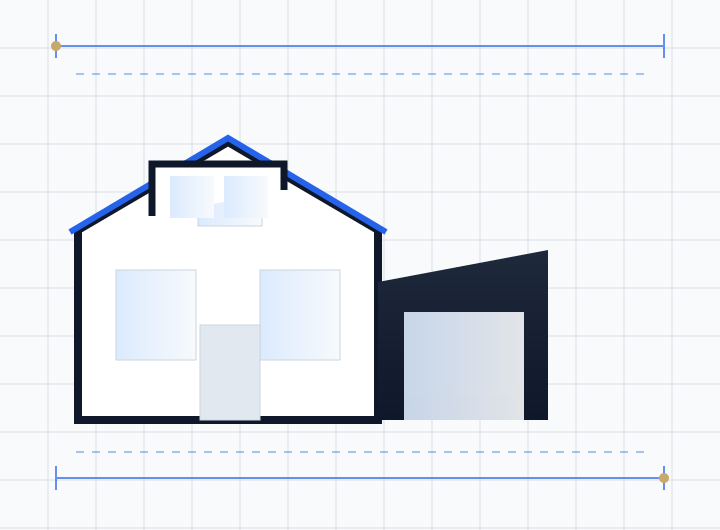

There are four main types of loft conversion in the UK. A rooflight (Velux) conversion keeps the roof as it is and is the cheapest. A dormer conversion adds a box to the rear slope and is the most common. A hip to gable conversion squares off a sloping side roof on semi-detached and end-terrace houses. A mansard conversion rebuilds the roof to create almost a full storey and usually needs planning permission. The right type is set mainly by your roof shape and head height, which should be at least 2.2 to 2.4 metres from the top of the ceiling joists to the ridge.
Most people arrive at a loft conversion with a budget and a room in mind. The roof usually has other ideas. The type of conversion you can have is decided first by the shape of the existing roof, the ridge height and where a staircase can land, and only then by what you would like to spend.
This guide compares the different types of loft conversion side by side, covers the variations people often ask about (L shaped dormers, gable to gable and bungalow conversions), and shows how to work out which one your house actually suits.
Key takeaways
- Measure the head height first. Below about 2.2 metres, only a mansard or lowered ceilings will usually work.
- A rear dormer is the default choice for most two-storey houses and is often permitted development.
- Hip to gable is only possible where the roof has a hipped end, so it suits semis, end terraces and detached houses.
- Mansards give the most space but cost the most and almost always need full planning permission.
- Every type needs building regulations approval, including a fixed staircase and a protected escape route.
- Typical 2026 budgets run from about £27,500 for a rooflight conversion to £75,000 or more for larger schemes.
Types of loft conversion compared
Here are the main loft conversion types in one table. Costs are shown as relative bands, because location, structure and finish change the final price a lot. For figures, see our loft conversion cost guide for 2026.
| Type | How it works | Space gained | Relative cost | Usual planning route | Best for |
|---|---|---|---|---|---|
| Rooflight (Velux) | Roof shape unchanged, rooflights set into the slope | Lowest | Lowest | Usually permitted development | Steep roofs with generous ridge height |
| Rear dormer | Box built out from the rear slope with vertical windows | High | Moderate | Often permitted development | Most terraced, semi and detached houses |
| L shaped dormer | Two dormers joined over the main roof and rear outrigger | Very high | Moderate to high | Sometimes permitted development, often an application | Victorian and Edwardian terraces with a back addition |
| Hip to gable | Sloping hip end rebuilt as a vertical gable wall | High | Moderate to high | Often permitted development | Semi-detached and end-terrace houses with hipped roofs |
| Gable to gable | Both hip ends converted to gables | Very high | High | Often permitted development within 50 m³ | Detached houses hipped at both ends |
| Mansard | Roof rebuilt with a near-vertical rear slope and flat top | Highest | Highest | Almost always full planning permission | Terraces, conservation areas, low ridge heights |
Before anything: the head height test
Measure from the top of the existing ceiling joists to the underside of the ridge. You generally want 2.2 to 2.4 metres as a starting point, because the new floor structure below and the roof insulation above both eat into it.
| Height from joists to ridge | Likely options |
|---|---|
| 2.4 m or more | Any type, including a simple rooflight conversion |
| 2.2 m to 2.4 m | Dormer or hip to gable, where the new structure gains full-height floor area |
| Under 2.2 m | Mansard, or lowering the ceilings of the rooms below |
The second test is the staircase. Approved Document K expects 2 metres of clear headroom over a stair. For a loft conversion where that is not possible, 1.9 metres at the centre of the stair, falling to 1.8 metres at the side, is accepted. Finding that run within an existing landing is the constraint that most often reshapes a design, so we fix the stair position before anything else.
1. Rooflight (Velux) loft conversion
The existing roof structure and shape are left alone. Rooflights are fitted into the roof slope, the floor is strengthened, insulation is added and a staircase is installed. Velux is a brand, but the name is now used for this whole type.
- Space gained: The least of the four, because you only use the space that already exists under the roof.
- Cost: The cheapest loft conversion by a clear margin, typically at the bottom of the £27,500 to £75,000 range.
- Planning: Usually permitted development, as long as the rooflights project no more than 150 mm from the roof slope and do not sit above the highest part of the roof. Restricted in conservation areas and on listed buildings.
- Suits: Houses with generous ridge height and a steep pitch, often older properties and some 1930s homes.
- Watch for: Usable floor area shrinks sharply once you leave out the low edges under the slope. Measure the usable area, not the footprint.
2. Dormer loft conversion
A structural box built out from the roof slope, almost always at the rear, with a flat or pitched roof and vertical windows. It is the default British loft conversion and by far the most common.
- Space gained: Substantial. A full width rear dormer turns a large area of low sloping ceiling into full-height floor.
- Cost: Moderate. More than a rooflight conversion and much less than a mansard, usually around the middle of the typical range.
- Planning: Often permitted development within the volume allowance of 40 m³ for terraced houses and 50 m³ for semi-detached and detached houses, as long as nothing extends beyond the roof slope facing the road and the ridge is not raised. Not available in conservation areas.
- Suits: Almost any two-storey house with a pitched roof and enough ridge height.
- Watch for: Large flat-roofed dormers work well inside but can look heavy. A pitched or hipped dormer looks softer and is sometimes preferred by planners on visible elevations.
L shaped dormer loft conversion
Common on Victorian and Edwardian terraces with a rear outrigger. One dormer sits on the main roof and a second on the back addition roof, joined in an L. It creates enough space for two bedrooms and a bathroom. Because of its size it often goes beyond permitted development, particularly in London, so check the volume early.
Rear dormer vs side dormer
Rear dormers are the usual choice because they face away from the road and fit permitted development more easily. Side dormers can help bungalows and detached houses with a hipped side roof, but side-facing windows usually need obscure glazing and must be non-opening below 1.7 metres from the floor under permitted development.
3. Hip to gable loft conversion
A hipped roof slopes on three or four sides instead of ending in a vertical gable wall. A hip to gable conversion builds that sloping end up into a vertical gable, squaring off the roof and creating a large amount of new usable space. It is very often combined with a rear dormer.
- Space gained: Large, and often transformative on a semi-detached house, because the new volume sits where the ridge is highest.
- Cost: Higher than a dormer alone, because a section of external wall is built and the roof structure is re-formed.
- Planning: Often permitted development within the 50 m³ allowance for semi-detached and detached houses, subject to the usual conditions. Mid-terrace houses have no hip, so this type does not apply to them.
- Suits: Semi-detached and end-terrace houses with hipped roofs, which covers a large share of interwar suburban housing.
- Watch for: On a semi-detached pair, converting one side creates an uneven roof. Some councils dislike this and others accept it, so check what has been approved on your street.
Gable to gable loft conversion
On a detached house hipped at both ends, both hips can be converted to gables. Combined with a rear dormer, this can create a very large loft floor, but the 50 m³ permitted development allowance gets used up quickly, so the volume needs calculating carefully.
4. Mansard loft conversion
The roof is rebuilt with a near-vertical rear slope, typically around 72 degrees, and a shallow or flat top. It effectively adds a full extra storey and is common on London terraces and wherever the roofscape is tightly controlled.
- Space gained: The most of any type, close to a full extra floor.
- Cost: The highest, because it is a rebuild of the roof rather than an alteration, usually at the top of the typical range or above it.
- Planning: Almost always needs full planning permission. In some conservation areas a mansard is preferred to a dormer because it reads as a traditional roof form.
- Suits: Terraced houses, particularly Victorian and Georgian, and homes where head height is too low for anything else.
- Watch for: Party wall work on both sides, a full structural design for the new roof, a longer programme and more exposure to weather during the build.
Mansard vs dormer: which is better?
A dormer is cheaper, quicker and often avoids a planning application. A mansard gives more space, a more traditional look and can work where head height is too low for a dormer. If a dormer fits your roof and planning allows it, it is usually better value. A mansard makes sense when the roof is too shallow, the street already has mansards, or the council will not accept a large box dormer.
Which loft conversion suits your house?
| House type | Usual best option | Why |
|---|---|---|
| Mid-terrace | Rear dormer, or L shaped dormer if there is an outrigger | No hip to convert, 40 m³ allowance |
| Victorian terrace in a conservation area | Mansard or rooflight | Dormers are not permitted development and often resisted |
| End-terrace | Hip to gable with rear dormer | Hipped end can be squared off |
| Semi-detached (hipped roof) | Hip to gable with rear dormer | Biggest gain for the money, 50 m³ allowance |
| Detached | Rear dormer, hip to gable or gable to gable | Depends on roof shape and how many hips |
| Bungalow | Dormer or hip to gable | Low pitches often need new structure to gain height |
| Steep older roof with high ridge | Rooflight conversion | Space already exists, lowest cost |
A bungalow loft conversion is a popular way to add a full upper floor without building outwards. The stair position matters even more here, because it takes space from the only existing floor. If you are weighing up going up against going out, our house extension drawings page covers the extension route.
Planning permission and permitted development
Many dormer, hip to gable and rooflight conversions to houses in England fall under permitted development, so no planning application is needed. The main conditions are:
- The extra roof volume stays within 40 m³ for terraced houses and 50 m³ for semi-detached and detached houses, counting any earlier roof additions.
- Nothing rises above the highest part of the existing roof.
- No extension beyond the roof slope on the principal elevation that faces a road.
- Materials are similar in appearance to the existing house.
- Side-facing windows are obscure glazed and non-opening below 1.7 metres.
- No balconies, verandas or raised platforms.
- The house is not in a conservation area, National Park, National Landscape or World Heritage Site, and its permitted development rights have not been removed.
- Flats and maisonettes do not have these rights.
A lawful development certificate is the safest way to prove a permitted development loft conversion is lawful when you sell. For the full rules, read our guides to loft conversion planning permission, permitted development rights in 2026 and how long planning permission takes.
Building regulations apply to every type
Whichever type you choose, and whether or not planning permission is needed, building regulations approval is required. Turning a two-storey house into a three-storey house changes what building control expects:
- A protected escape route from the loft to a final exit, usually an enclosed stairway with fire doors to the habitable rooms off it, because windows on a third storey are generally too high to escape from.
- Mains-wired interlinked smoke alarms on every storey.
- A fixed staircase that meets Approved Document K. A loft ladder is not acceptable for a habitable room.
- A new floor structure, since existing ceiling joists are almost never strong enough to be floor joists, often with steel beams sized by a structural engineer.
- Insulation to current Part L standards, at the rafter line or ceiling line depending on the design.
- Ventilation, balustrade heights and sound insulation between the new floor and the rooms below.
Many conversions also involve the Party Wall etc. Act 1996, because steel beams often bear into the shared wall. Our building regulations drawings service covers all of this, and planning permission vs building regulations explains why passing one does not cover the other.
Which loft conversion should you choose?
If your roof has a hip and you want the most space for the money, a hip to gable with a rear dormer is usually the strongest answer. On a mid-terrace with good ridge height, a rear dormer alone is the efficient choice. If ridge height is marginal and the budget allows, a mansard solves a problem nothing else can. If you already have generous height and modest plans, a rooflight conversion is the sensible, cheap option that too few people consider.
The order is always the same: measure the ridge height, find the staircase, check the planning position, then choose the type. Choosing the type first is how projects end up abandoned in week three.
How we design a loft conversion
- Measured survey of the roof void, recording the true ridge height, joist depth, pitch and the landing where the stair will land.
- Feasibility check of the head height, stair route and permitted development volume before any design work is paid for.
- Proposed drawings showing the conversion type, floor level, stair, dormer or gable construction and steel positions for your engineer.
- Planning or certificate drawings, either a lawful development certificate set or a full application where a mansard or large dormer needs one.
- Building regulations package with floor build-up, insulation, fire strategy and stair geometry, so builders can price like for like.
See our loft conversion drawings service for what is included, and our architectural drawings cost guide for typical fees. We work remotely across the UK, including London, where mansards are common, as well as Manchester, Birmingham and Bristol.
Frequently asked questions
What are the main types of loft conversion?
The four main types are rooflight (Velux), dormer, hip to gable and mansard. Variations include L shaped dormers, gable to gable conversions on detached houses, and bungalow loft conversions.
What is the cheapest type of loft conversion?
A rooflight or Velux conversion is the cheapest, because the roof shape stays the same and only rooflights, a new floor, insulation and a staircase are added. It only works where there is already enough head height.
Which loft conversion gives the most space?
A mansard gives the most space, close to a full extra storey. On semi-detached houses, a hip to gable combined with a rear dormer gives a similar gain at lower cost.
What is the minimum head height for a loft conversion?
Aim for at least 2.2 to 2.4 metres from the top of the ceiling joists to the underside of the ridge. Below about 2.2 metres, a mansard or lowering the ceilings below is usually needed.
Do I need planning permission for a dormer loft conversion?
Often not. A rear dormer on a house in England is usually permitted development if the extra volume stays within 40 m³ for a terraced house or 50 m³ for a semi or detached house and the other conditions are met. Conservation areas and flats need permission.
Is a mansard better than a dormer?
A mansard gives more space and suits low roofs and conservation areas, but costs more and needs planning permission. A dormer is cheaper and often permitted development, so it is better value where the roof allows it.
Can you do a hip to gable conversion on a terraced house?
Only on an end-terrace with a hipped end. A mid-terrace house has no hip, so a rear dormer or mansard is used instead.
Do all loft conversions need building regulations approval?
Yes. Every loft conversion to a habitable room needs building regulations approval for the floor structure, fixed staircase, fire escape route, smoke alarms, insulation and ventilation, even when planning permission is not needed.
Sources
- GOV.UK: Permitted development rights for householders, technical guidance
- Town and Country Planning (General Permitted Development) (England) Order 2015, Schedule 2
- Planning Portal: Loft conversion
- Approved Document K: protection from falling, collision and impact
- Approved Document B: fire safety
- Party Wall etc. Act 1996